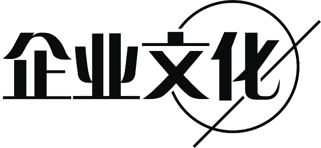

-
——公司简介——
-
灵龙集团（Smart Dragon）是中国领先的作家公司，致力于畅销作品的创作、剧本改编、影视研发和游戏授权，为年轻的受众群体提供健康向上、有启发的文字和影像作品，为优秀的年轻作者提供透明化的代理模式和贴身服务，并涉足VR内容开发领域，以“缔造中国第一幻想世界”为目标。
-
公司旗下的“九州”幻想世界为中国最早的架空世界之一，享有极高的知名度。
-
公司创始人江南（真名杨治）毕业于北京大学和Washington University in St.
Louis，著名作家，著名出版人，中国作家富豪榜首富，代表作《此间的少年》、《九州缥缈录》和《龙族》等。其中《龙族》以每本超250万册、整体超1500万册的业绩创下中国图书出版业的多项记录，并获五个一工程奖。
-
江南同时也是百度文学前身——纵横中文网——的创始人之一。
-
灵龙文化在成立的当年获得奥飞娱乐约一亿人民币的首轮投资，是中国作家公司中最大额的首轮投资，创下另一个记录。
-
-
2005年，以江南为主编的团队创办杂志《九州幻想》，这是中国第一本以作家为核心的幻想文学杂志，在组稿和经营模式上开创了先河，也是中国原创作家地位提升的标志。
-
2005年，灵龙文化的早期团队在北京成立，初期成员全部来自创始人的母校北京大学。
-
2006年，江南为主编创办MOOK《九州志》，作为九州架空世界的新传播平台，迄今出版四季，签约作者近百人。
-
2007年，江南和团队以创始人身份加入纵横中文网，获得完美世界的投资。
-
2009年，《龙族》系列出版，销量数度创下中国畅销书的销量记录，并一直延续至今，成为中国畅销书市场上的长盛作品，时间跨度、厚度规模、人物形象也都创下记录。
-
2010年，和人民文学出版社合作，再版经典作品《九州缥缈录》系列，并展开长期的翻译和对海外推广中国历史幻想的工作。
-
2015年，《龙族》系列以新作《龙族IV·奥丁之渊》再次创造记录，一个月内销量突破250万册，保持旺盛的增长势头。
-
2015年，灵龙文化成立，整合过去资源，展望未来市场，为受众创作，为作家服务。
-

-
“创新”是灵龙的核心，作为半数成员由作家组成的新形态作家公司，灵龙不同于既有的作品交易公司或作品发布平台，销售不是灵龙的目标，而是创新带来的必然结果。
-
灵龙文化在创立之日就提出了“简化和深化IP供应”和“作家签约战略”两项计划，前者意味着灵龙并不单纯地出售作品权力，而是为旗下作品和作家提供完整、IP开发相关的解决方案，含编剧、美术、宣传和投资；后者则意味着灵龙文化将秉着尊重创作的态度，将旗下签约作者的代理费用降低到象征性的1%。
-
- 目前研发中的部分作品：
- 《九州缥缈录》电视剧
- 《上海堡垒》电影
- 《龙族》电影
- 《端脑》电视剧